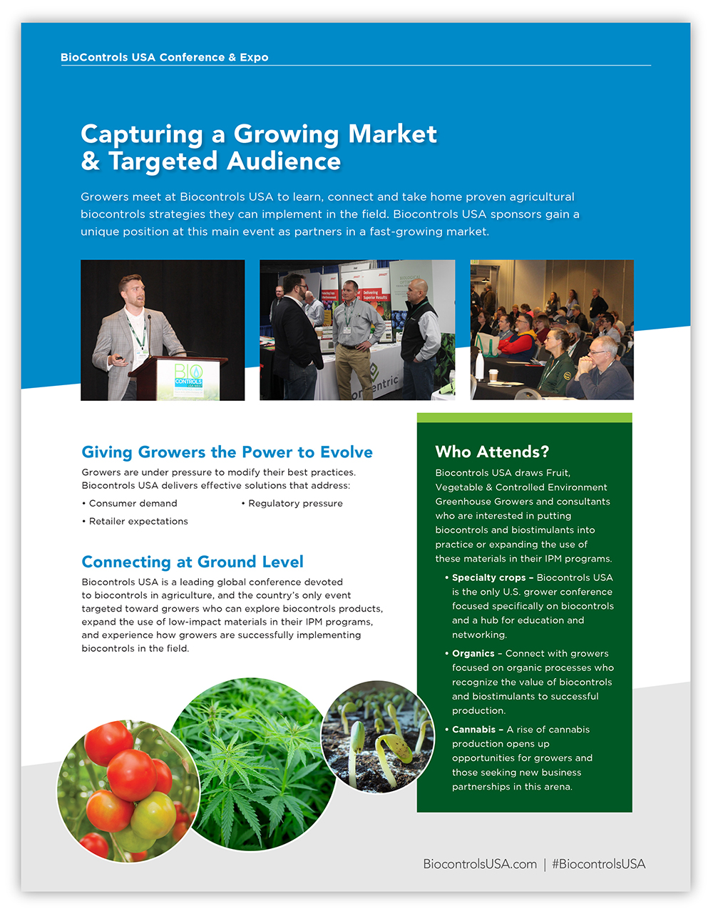
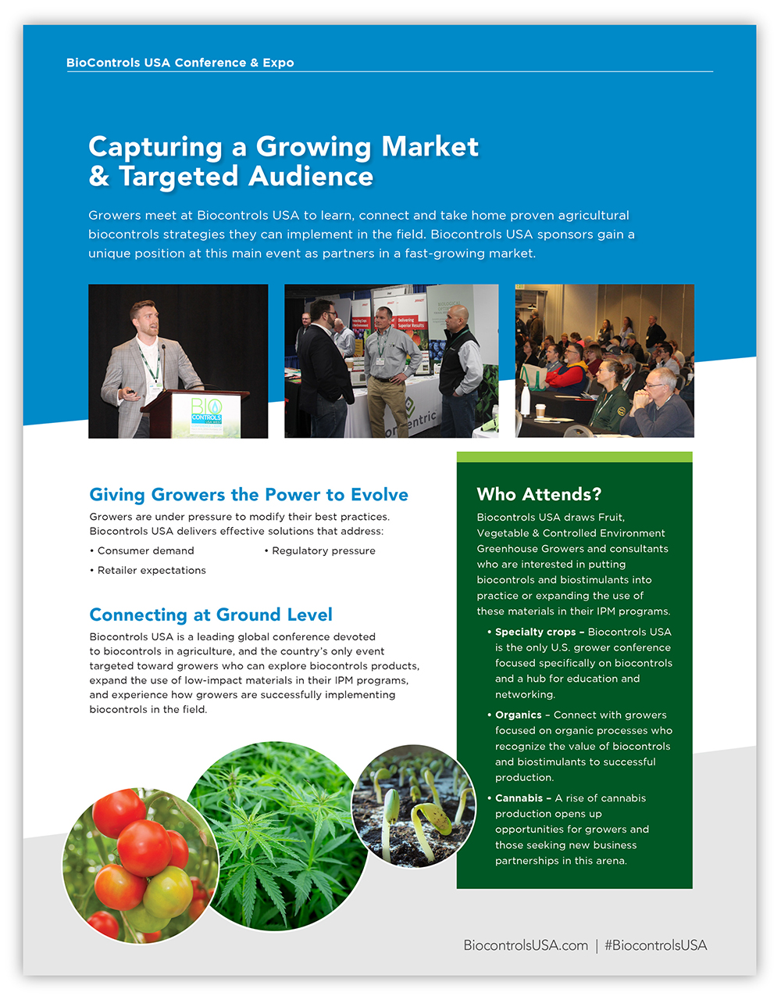
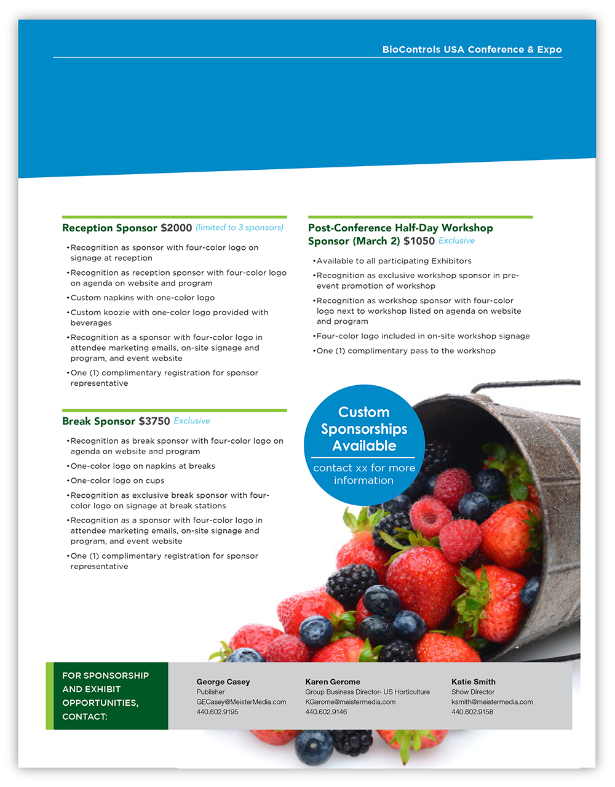
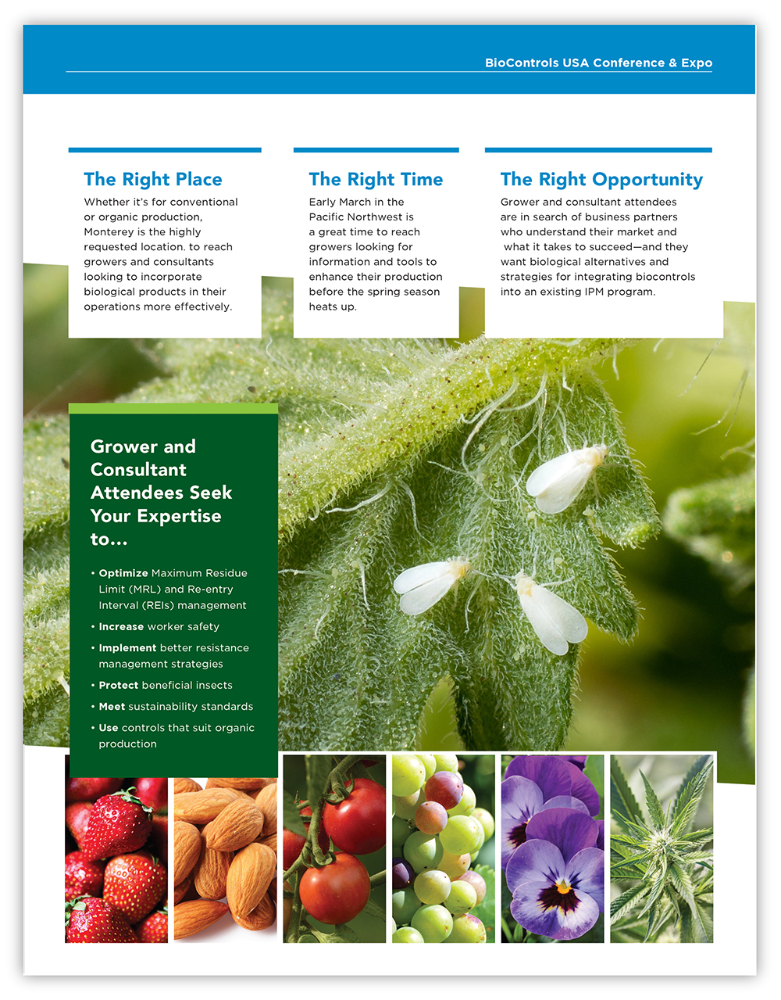

Biocontrols Conference & Expo Sales Prospectus
The annual BioControls USA Conference & Expo is an event aimed toward growers, pest control advisers, researchers, suppliers and those connected to the biocontrols industry and consists of education sessions to help those growers select, purchase, apply, and measure the efficacy of biocontrols, and a trade-show floor with exhibitors showcasing their products and how growers can use them to help enhance their yields.
Using images of the previous event to showcase the educational and exhibit aspects of the event, I stayed true to the already-established brand colors and typeface while also utilizing enticing images of fruits and vegetables, along with common field-pests to indicate which ag markets we're seeking to participate.
 


